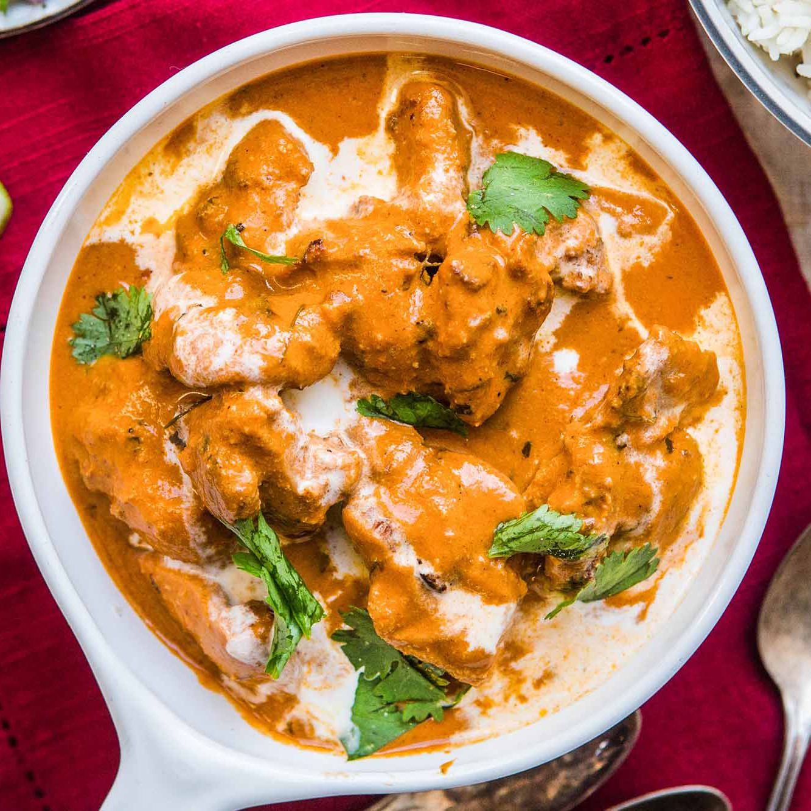

Butter Chicken

Description :
Butter chicken, traditionally known as murgh makhani, an Indian dish which is a type of curry made from chicken
with a spiced tomato and butter sauce. Its sauce is known for its rich texture.
Ingredients :
Steps :
Marinate the chicken:
-
Bring the chicken and the rest of the marinade ingredients together in a large bowl. Using your hands,
massage the marinade into the chicken.
Cover with plastic wrap and refrigerate for at least 1 hour, or up to overnight.
Soak cashews and almonds:
-
Soak cashews and almonds in water for at least an hour to (or up to overnight) before preparing the rest of
the recipe.
Cook the chicken:
-
Heat a skillet or grill pan over medium-high heat. Drizzle a teaspoon of oil to the pan.
Working in batches, remove chicken from the marinade and grill them on the pan for 3 to 5 minutes on each
side, until the chicken is cooked through (clear juice runs out of it when you cut into it). Do not crowd
the pan.
Once cooked, transfer the chicken into a separate dish. Cover and set aside for later.
Start making the sauce:
-
Melt 1 1/2 tablespoons of the butter in a medium sized Dutch oven or a skillet on medium low heat. As soon
as the butter melts, add the ginger garlic paste followed by sugar. Sauté for 1 to 2 minutes.
Stir in the tomato and cook for 8 to 10 minutes on medium high heat, until all the extra liquid is cooked
off. The sauce should be a loose, paste-like consistency.
Add coriander, garam masala, Kashmiri Lal Mirch, and salt. Stir and cook on medium heat for 2 to 3 minutes.
Turn off the heat.
Puree the sauce with the nuts:
-
Transfer the paste to a blender or the bowl of a food processor. Add the soaked cashews and almonds. Blend
into a smooth paste.
Finish the dish:
-
Return the paste to the cooking pan over medium heat. Add the water to the paste and stir to make a smooth
sauce.
As the sauce begins to boil, add the grilled chicken and heavy cream. Stir well. Cover the pan and simmer
for 5 minutes.
Rest the butter chicken:
-
Turn off the heat and uncover the pan. Stir in the remaining 1/2 tablespoon butter and the kasuri methi.
Cover again, and let the dish rest for 8 to 10 minutes so the flavor of kasuri methi can marry into the
butter chicken.
Serve:
-
Serve the butter with a side of steamed basmati rice, roti, or naan. Leftovers will keep refrigerated,
covered, for five days.
You can freeze this dish in an airtight covered container or a zip-top bag for a month. Thaw and reheat in a
saucepan over medium-low heat to retain the texture.